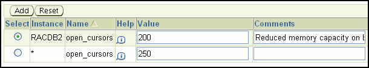
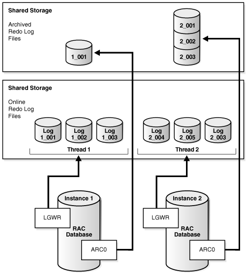

6 Administering Database Instances and Cluster Databases
Web-based Oracle Enterprise Manager Cloud Control enables you to manage Oracle Real Application Clusters (Oracle RAC) databases. You can use the Cloud Control console to administer multiple Oracle RAC databases and cluster nodes.
The Enterprise Manager console is a central point of control for the Oracle environment. Using this console you can perform many tasks, such as starting and stopping database components and managing parameters and parameter files in Oracle RAC
Topics:
- About Oracle Real Application Clusters Database Management
There are differences when managing an Oracle RAC database compared to a single-instance Oracle Database. - About Oracle RAC Management Using Enterprise Manager
The web-based Oracle Enterprise Manager Cloud Control console enables you to manage Oracle RAC and Oracle RAC One Node databases. - About Oracle RAC One Node Database Management
Oracle RAC One Node databases are administered slightly differently from Oracle RAC or single-instance databases. - About Password Files for an Oracle RAC or Oracle RAC One Node Database
The database uses a password file to keep track of database user names that have been granted the SYSDBA, SYSOPER, SYSRAC, SYSBACKUP, SYSDG, or SYSKM administrative privilege. - Starting and Stopping Oracle RAC Databases and Database Instances
You can start up and shut down the cluster database from the Enterprise Manager Cluster Database Home page. - Starting and Stopping PDBs in Oracle RAC
You manage pluggable databases (PDBs) in an Oracle RAC-based multitenant database by managing services, regardless of whether the PDBs are policy-managed or administrator-managed. - Managing Oracle Real Application Clusters Initialization Parameters
Managing initialization parameters for an Oracle RAC database is essentially the same as managing them for a single-instance Oracle database. - Limiting CPU Usage of Oracle RAC Database Instances
Oracle Database provides a method for managing CPU allocations on a multi-CPU server running multiple database instances. This method is called instance caging. - About Administering Storage in Oracle RAC
This topic provides additional information for using Enterprise Manager to manage some storage structures of an Oracle RAC database.
See Also:
Oracle Database 2 Day DBA for an overview of database monitoring tasks
6.1 About Oracle Real Application Clusters Database Management
There are differences when managing an Oracle RAC database compared to a single-instance Oracle Database.
Oracle Real Application Clusters (Oracle RAC) provides technology that links two or more individual computers so that they function as one system. Oracle RAC enables each node, which is a computer that is a member of a cluster, to share access to the Oracle database. If one cluster node fails or is taken offline, then the other cluster nodes continue operating and the entire Oracle RAC database remains available. Two or more inexpensive computers can appear to applications as if they were a single, much more powerful and more expensive, computer.
To increase the performance of an Oracle RAC database, you can add cluster nodes. Each additional node can help speed up application processing, support more users or processes, or both. In addition, you can also add cluster nodes to increase the availability and reliability of a two-node Oracle RAC database. The more nodes that your Oracle RAC environment has, the less the impact of the loss of any individual node on the database.
An Oracle RAC database requires three components: cluster nodes, shared storage, and Oracle Clusterware. Although you can choose how many nodes your cluster should have and what type of shared storage to use, this guide describes one specific configuration for a two-node cluster. This two-node configuration uses Oracle Automatic Storage Management (Oracle ASM) for storage management and Recovery Manager (RMAN) for the backup and recovery strategy.
Most administration tasks are the same for Oracle single-instance and Oracle RAC databases. This guide provides additional instructions for database administration tasks specific to Oracle RAC, and recommendations for managing Oracle RAC databases.
Note:
If you are using Oracle Database Standard Edition, then your cluster must adhere to the license restrictions. See Oracle Database Licensing Information for specific details on these restrictions.
See Also:
Oracle Database 2 Day DBA for information about managing single instance databases
6.2 About Oracle RAC Management Using Enterprise Manager
The web-based Oracle Enterprise Manager Cloud Control console enables you to manage Oracle RAC and Oracle RAC One Node databases.
Enterprise Manager is a central point of control for the Oracle environment that you access by way of a graphical user interface (GUI). You can use Enterprise Manager to create and modify services, and to start and stop the cluster database instances and the cluster database. Use Enterprise Manager Cloud Control to administer your entire Oracle RAC environment, not just the Oracle RAC database.
When you log in to Oracle Enterprise Manager Cloud Control and access the database home page for an Oracle RAC database, the Cluster Database Home page appears. The Cluster Database Home page is similar to a single-instance Database Home page. However, on the Cluster Database Home page, Enterprise Manager displays the system state and availability of the entire Oracle RAC environment. This includes a summary about alert messages and job activity, and the status of and links to all the database and Oracle Automatic Storage Management (Oracle ASM) instances. By clicking the Cluster tab on this page you can view the Cluster Home page to view the status of and alerts for the underlying cluster.
Note:
Oracle Enterprise Manager Cloud Control manages all the Oracle ASM instances on the nodes. Only one Oracle ASM instance exists on a node, no matter how many Oracle databases use Oracle ASM for storage.
6.3 About Oracle RAC One Node Database Management
Oracle RAC One Node databases are administered slightly differently from Oracle RAC or single-instance databases.
Oracle Real Application Clusters One Node (Oracle RAC One Node) is a single instance of an Oracle Real Application Clusters (Oracle RAC) database that runs on one node in a cluster. Instead of stopping and starting instances, you use Oracle RAC One Node online database relocation to relocate the Oracle RAC One Node instance to another server.
-
Administrator-managed Oracle RAC One Node databases: You must monitor the candidate node list and make sure a server is always available for failover if possible. Candidate servers reside in the Generic server pool of the cluster. If the node currently hosting the Oracle RAC One node database instance fails, then the database and its services fail over to one of the candidate servers.
-
Policy-managed Oracle RAC One Node databases: You must ensure that the server pools are configured such that a server will be available for the database to fail over to in case its current node becomes unavailable. Also, the destination node for online database relocation must be located in the database's server pool.
For an overview of the online database relocation procedure, see the following topic:
Topics:
- Online Database Relocation
You can relocate an Oracle RAC One Node database to another node while still maintaining service availability using the online database relocation feature.
See Also:
Oracle Real Application Clusters Administration and Deployment Guide for more information about managing Oracle RAC One Node databases
6.3.1 Online Database Relocation
You can relocate an Oracle RAC One Node database to another node while still maintaining service availability using the online database relocation feature.
Only during a planned online database relocation is a second instance of an Oracle RAC One Node database created, so that any database sessions can continue while the database is relocated to a new node. You can only use online database relocation with Oracle RAC One Node databases but you cannot use online database relocation with Oracle RAC databases regardless of their management style (either administrator or policy managed).
You can use the srvctl relocate database command to relocate the Oracle RAC One Node database instance to a different node in the cluster. You can also use this command to configure the amount of time after the relocated database starts and services are migrated, before the former instance of the database stops. This configured amount of time is not an upper bound on the amount of time taken by the entire operation, but only controls how long the relocated database waits for connections to migrate from the former instance to the new instance, before stopping the former instance.
If your Oracle RAC One Node database is administrator managed, then the target node to which you want to relocate the database instance must be part of the Free server pool at the moment you initiate the relocation. If you have a spare target node in the Free server pool, then this node is added to the candidate list for the Oracle RAC One Node database.
Before you relocate a database instance, you must ensure that the database service user is added to the wallet. Run a command similar to the following to check whether the database service user is in the wallet:
crsctl query wallet -type OSUSER -allIf the database service user is not in the wallet, then run a command similar to the following to add the database service user to the wallet:
crsctl add wallet -type OSUSER -user user_name -passwdOnline database relocation occurs, as follows:
-
Start a new database instance in a different location.
-
Move all the services to the relocated instance.
-
Wait for all the connections to migrate to the relocated instance.
-
Shut down the former database instance, forcing any remaining connections to move to the relocated instance.
The online relocation time-out, specified with the -timeout option of the srvctl relocate database command, is the amount of time you configure to complete step 3.
Note:
When you use password file-based authentication for remote management of Oracle RAC One Node databases without any shared password file, you must have two password files on each node where the database can run: one named SID_prefix_1 and the other named SID_prefix_2. You must recopy both of these files to all candidate nodes every time you update the password file. This is true for both policy-managed and administrator-managed databases.
Oracle recommends using Oracle Clusterware to start and stop the database, and defining users in the data dictionary for other management.
6.4 About Password Files for an Oracle RAC or Oracle RAC One Node Database
The database uses a password file to keep track of database user names that have been granted the SYSDBA, SYSOPER, SYSRAC, SYSBACKUP, SYSDG, or SYSKM administrative privilege.
Because these privileges allow access to a database instance even when the database is not open, control of these privileges is totally outside of the database itself. Users can be authenticated through operating system (OS) authentication, password file, or with a directory-based authentication service, such as Oracle Internet Directory.
Note:
Operating system authentication takes precedence over password file authentication. If you meet the requirements for operating system authentication, then even if you use a password file, you will be authenticated by operating system authentication.
If you are not in the one of the operating system groups, and you are not in the password file, then attempting to connect with the clause fails.
You can use password file authentication for an Oracle database instance and for an Oracle Automatic Storage Management (Oracle ASM) instance. The password file for an Oracle database is called a database password file, and the password file for Oracle ASM is called an Oracle ASM password file.
Starting with Oracle Database 12c release 1 the password file is stored in an Oracle ASM diskgroup. If you use DBCA or the installer to create the Oracle RAC or Oracle RAC One Node database, then, by default, the password file is created in an ASM diskgroup. This allows the password file to be accessible from any node in the cluster. If you create a password file manually, then it must be available to all the Oracle RAC database instances.
6.5 Starting and Stopping Oracle RAC Databases and Database Instances
You can start up and shut down the cluster database from the Enterprise Manager Cluster Database Home page.
By using the Enterprise Manager Cluster Database Home page for cluster database startup and shutdown operations, you ensure that all the instances that belong to the Oracle RAC database are in a consistent state. Oracle Enterprise Manager enables you to more easily manage an Oracle RAC database.
You can start and stop individual instances in an Oracle RAC database. Starting and stopping one instance in an Oracle RAC database does not stop or start the other database instances. To completely stop an Oracle RAC database, you must shut down all of its instances.
You can also start and shut down instances using SQL*Plus or Server Control (SRVCTL).
To start and stop an entire Oracle RAC database, assuming you are using a server parameter file (SPFILE):
Note:
You can start and shut down individual instances from each instance's home page. However, it is easier to perform instance startup and shutdown operations directly from the Startup/Shutdown: Select Operation page.
See Also:
Oracle Real Application Clusters Administration and Deployment Guide for more information about using command-line interfaces to start and stop Oracle RAC database instances
6.6 Starting and Stopping PDBs in Oracle RAC
You manage pluggable databases (PDBs) in an Oracle RAC-based multitenant database by managing services, regardless of whether the PDBs are policy-managed or administrator-managed.
Administering an Oracle RAC-based multitenant container database (CDB) is somewhat similar to administering a non-CDB. The differences are only that some administrative tasks apply to the entire CDB, some apply only to the root, and some apply to specific pluggable databases (PDBs). Administering a pluggable database (PDB) involves a small subset of the tasks required to administer a non-CDB. In this subset of tasks, most are the same for a PDB and a non-CDB. There are some differences, however, such as when you modify the open mode of a PDB. Also, a PDB administrator is limited to managing a single PDB and is not affected by other PDBs in the CDB.
You manage PDBs in an Oracle RAC-based CDB by managing services, regardless of whether the PDBs are policy managed or administrator managed. Assign one dynamic database service to each PDB to coordinate start, stop, and placement of PDBs across instances in a clustered container database.
For example, if you have a CDB called raccont with a policy-managed PDB called spark, which is in a server pool called prod, then assign a service called plugsvc to this database using the following command:
srvctl add service –db raccont –pdb spark –service plug –serverpool prodThe service plugsvc will be uniformly managed across all nodes in the server pool. If you want to have this service running as a singleton service in the same server pool, use the -cardinality singleton parameter with the preceding command.
Note:
Unlike SQL*Plus, SRVCTL operates on a cluster database, as a whole. Starting a PDB using services therefore applies to multiple instances of the clustered CDB at the same time, if the service is defined to run on multiple servers simultaneously, and the current status of the cluster allows for this placement.6.7 Managing Oracle Real Application Clusters Initialization Parameters
Managing initialization parameters for an Oracle RAC database is essentially the same as managing them for a single-instance Oracle database.
Note the following differences for parameters in Oracle RAC databases:
-
Parameters that are cluster-specific have the value Cluster Database in the Category column.
-
Parameters that are the same on each instance in the Oracle RAC database are identified in the Instance column with an asterisk (*).
-
Parameters that are set to different values on each instance of an Oracle RAC database are listed by instance name.
One difference when managing initialization parameters in an Oracle RAC environment is that parameters can apply to more than one instance of the database. If you change a parameter setting that is marked by an asterisk, which indicates that the parameter is a cluster-wide database initialization parameter, then you change that parameter's setting for all the instances in your Oracle RAC database. If you change an initialization parameter prefixed with an instance name, or an instance-specific initialization parameter, then the change affects only that instance; the change does not affect the parameter's settings on other database instances.
This section contains the following topics:
Topics:
- About Configuring Initialization Parameters for an Oracle RAC Database
Oracle Database stores initialization parameters in either a server parameter file or a text-based parameter file. - About Modifying the SERVICE_NAMES Parameter for Oracle RAC
TheSERVICE_NAMESparameter should not be modified in the same manner as other initialization parameters. - About the Server Parameter File for Oracle Real Application Clusters
A server parameter file is a repository for initialization parameters. - Editing Initialization Parameter Settings for an Oracle RAC Database
You can use Enterprise Manager to view and edit the initialization parameter settings for your Oracle RAC database. - Example: Modifying the OPEN_CURSORS Parameter
This topic provides an example of modifying the OPEN_CURSORS parameter.
See Also:
-
Oracle Real Application Clusters Administration and Deployment Guide for more information about initialization parameters in an Oracle RAC environment
6.7.1 About Configuring Initialization Parameters for an Oracle RAC Database
Oracle Database stores initialization parameters in either a server parameter file or a text-based parameter file.
A server parameter file (SPFILE) is a type of repository for initialization parameters that is maintained on the server where the Oracle database server runs, or on shared storage for an Oracle RAC database. Initialization parameters stored in a server parameter file are persistent, in that any changes made to the parameters while an instance is running can persist across instance shutdown and startup.
An initialization parameter file (PFILE) is a text file that contains initialization parameter settings. In contrast to the SPFILE, this parameter file is not binary and does not need to be located on the database server. The text-based initialization parameter file can be read by the database, but it is not written to by the database.
By default, Oracle Database sets most parameters to a default value and this value is the same across all instances. However, many initialization parameters can also have different values on different instances as described in Oracle Database Reference Other parameters must be either unique or identical across instances, as described in the following sections:
See Also:
-
Oracle Real Application Clusters Administration and Deployment Guide for more information about initialization parameters in Oracle RAC environments
6.7.2 About Modifying the SERVICE_NAMES Parameter for Oracle RAC
The SERVICE_NAMES parameter should not be modified in the same manner as other initialization parameters.
The SERVICE_NAMES initialization parameter specifies one or more names by which clients can connect to the instance. The instance registers its service names with the listener. When a client requests a service, the listener determines which instances offer the requested service and routes the client to the appropriate instance.
In an Oracle RAC database, you should not modify this parameter directly. Instead, define services for your database and database instances using the Clustered Managed Database Services page in Oracle Enterprise Manager. If you must change a service, then you can use either Enterprise Manager or SRVCTL. When you use either Oracle Enterprise Manager or SRVCTL to create and start the service, the SERVICE_NAMES parameter is updated automatically once the service is active.
Related Topics
6.7.3 About the Server Parameter File for Oracle Real Application Clusters
A server parameter file is a repository for initialization parameters.
When you create the database, Oracle creates an SPFILE in the file location that you specify. This location can be an Oracle ASM disk group or a file on a cluster file system. Oracle recommends that you store the SPFILE using Oracle ASM.
All instances in the cluster database use the same SPFILE at startup. Oracle RAC uses a traditional parameter file only if an SPFILE does not exist or if you specify PFILE in your STARTUP command. Oracle recommends that you use an SPFILE to simplify administration, maintain parameter setting consistency, and to guarantee parameter setting persistence across database shutdown and startup events. In addition, you can configure RMAN to back up your SPFILE.
See Also:
-
Oracle Database Backup and Recovery User’s Guide for information about using RMAN to backup the SPFILE
6.7.4 Editing Initialization Parameter Settings for an Oracle RAC Database
You can use Enterprise Manager to view and edit the initialization parameter settings for your Oracle RAC database.
You can set the parameters on the Current subpage of the Initialization Parameters page to particular values to initialize many of the memory and process settings of an Oracle instance. When you modify initialization parameters using the Current tab, the changes are applied only to the running instances, not the SPFILE, unless the Apply changes in current running instance(s) mode to SPFile option is selected.
When you modify initialization parameters using the SPFile subpage, the changes are applied only to the SPFILE, not the currently running instances, unless the Apply changes in SPFile mode to the current running instance(s) option is selected. Resetting parameters using the SPFile subpage is different than resetting the same parameters using the Current subpage. You can either reset the parameter value for an instance back to the default value for all instances, or you can delete the default parameter setting (unset the parameter) for all instances.
To view or modify the initialization parameters using Enterprise Manager:
Related Topics
6.7.5 Example: Modifying the OPEN_CURSORS Parameter
This topic provides an example of modifying the OPEN_CURSORS parameter.
Suppose that the open_cursors parameter has two entries in the SPFILE:
*.open_cursors = 250
RACDB2.open_cursors = 200
Figure 6-1 Initial Values for the OPEN_CURSORS Parameter
Description of "Figure 6-1 Initial Values for the OPEN_CURSORS Parameter"
Using the Initialization Parameters page with the SPFile tab selected, if you click Reset for *.open_cursors, then Enterprise Manager deletes that entry from both the SPFILE and the displayed list of parameters, leaving only RACDB2.open_cursors = 200 displayed.
Figure 6-2 Parameter Values After Deleting Default Entries
Description of "Figure 6-2 Parameter Values After Deleting Default Entries"
If you click Reset for RACDB2.open_cursors, then Enterprise Manager also deletes this parameter entry from both the SPFILE and the displayed list of parameters, but then a new entry, *.open_cursors = <NULL> is added to the displayed list of parameters for the reset parameter.
Figure 6-3 Parameter Values After Deleting Custom Entry and Default Entry
Description of "Figure 6-3 Parameter Values After Deleting Custom Entry and Default Entry"
6.8 Limiting CPU Usage of Oracle RAC Database Instances
Oracle Database provides a method for managing CPU allocations on a multi-CPU server running multiple database instances. This method is called instance caging.
You might decide to run multiple Oracle database instances on a single multi-CPU server. When running multiple instances on a single server, the instances compete for CPU. One resource-intensive database instance could significantly degrade the performance of the other instances. For example, on a 16-CPU system with four database instances, the operating system might be running one database instance on the majority of the CPUs during a period of heavy load for that instance. This could degrade performance in the other three instances. CPU allocation decisions such as this are made solely by the operating system; the user generally has no control over them. With Instance Caging, users can partition CPU resources among multiple instances running on a server to ensure predictable performance.
A simple way to limit CPU consumption for each database instance is to use instance caging. Instance caging is a method that uses an initialization parameter to limit the number of CPUs that an instance can use simultaneously. In the previous example, if you use instance caging to limit the number of CPUs to four for each of the four instances, there is less likelihood that one instance can interfere with the others. When constrained to four CPUs, an instance might become CPU-bound. This is when the Resource Manager begins to do its work to allocate CPU among the various database sessions according to the resource plan that you set for the instance. Thus, instance caging and the Resource Manager together provide a simple, effective way to manage multiple instances on a single server.
To enable instance caging, do the following for each instance on the server:
6.9 About Administering Storage in Oracle RAC
This topic provides additional information for using Enterprise Manager to manage some storage structures of an Oracle RAC database.
Topics:
- About Automatic Undo Management in Oracle RAC
Oracle RAC automatically manages undo segments within a specific undo tablespace that is assigned to an instance. - Oracle Automatic Storage Management in Oracle RAC
Oracle Automatic Storage Management (Oracle ASM) automatically optimizes storage to maximize performance by managing the storage configuration across the disks that Oracle ASM manages. - Administering Redo Logs in Oracle RAC
These topics provide an overview of additional concepts and procedures for configuring redo log files in Oracle RAC environments.
See Also:
Oracle Database 2 Day DBA for managing storage for single-instance databases
6.9.1 About Automatic Undo Management in Oracle RAC
Oracle RAC automatically manages undo segments within a specific undo tablespace that is assigned to an instance.
Only the instance assigned to the undo tablespace can modify the contents of that tablespace. However, each instance can read the undo data blocks created by any instance. Also, when performing transaction recovery, any instance can update any undo tablespace, if that undo tablespace is not currently being used by another instance for undo generation or transaction recovery. You assign undo tablespaces in your Oracle RAC database by specifying a different value for the UNDO_TABLESPACE parameter for each instance in your SPFILE or individual PFILEs. You cannot simultaneously use automatic undo management and manual undo management in an Oracle RAC database. In other words, all instances of an Oracle RAC database must operate in the same undo mode.
See Also:
Oracle Database 2 Day DBA for more information about managing the undo data for your database
6.9.2 Oracle Automatic Storage Management in Oracle RAC
Oracle Automatic Storage Management (Oracle ASM) automatically optimizes storage to maximize performance by managing the storage configuration across the disks that Oracle ASM manages.
Oracle ASM optimizes storage by evenly distributing the storage load across all the available storage within your cluster database environment. Oracle ASM partitions your total disk space requirements into uniformly sized units across all the disks in a disk group. Oracle ASM can also automatically mirror data to prevent data loss. Because of these features, Oracle ASM also significantly reduces your administrative overhead.
As in single-instance Oracle databases, using Oracle ASM in Oracle RAC does not require I/O tuning. The following topics describe Oracle ASM and Oracle ASM administration:
Topics:
- About Oracle ASM Components in Oracle RAC
An Oracle ASM instance can operate in several configurations in Oracle Flex ASM. - About Disk Group Configurations for Oracle ASM in Oracle RAC
When you create a disk group for a cluster, or add new disks to an existing clustered disk group, you must prepare only the underlying physical storage on shared disks.
6.9.2.1 About Oracle ASM Components in Oracle RAC
An Oracle ASM instance can operate in several configurations in Oracle Flex ASM.
Oracle Flex ASM enables an Oracle ASM instance to run on a separate physical server from the database servers. With this deployment, larger clusters of Oracle ASM instances can support more database clients while reducing the Oracle ASM footprint for the overall system. When using Oracle Flex ASM, Oracle ASM clients are configured with direct access to storage.
With Oracle Flex ASM, you can consolidate all the storage requirements into a single set of disk groups. All these disk groups are mounted by and managed by a small set of Oracle ASM instances running in a single cluster. You can specify the number of Oracle ASM instances with a cardinality setting. The default is three instances.
Each Oracle ASM instance has either an SPFILE or PFILE type parameter file.
For the environment described in this guide, there is an Oracle ASM instance on each node and the Oracle ASM instances use SPFILEs.
Related Topics
6.9.2.2 About Disk Group Configurations for Oracle ASM in Oracle RAC
When you create a disk group for a cluster, or add new disks to an existing clustered disk group, you must prepare only the underlying physical storage on shared disks.
The shared disk requirement is the only substantial difference between using Oracle ASM in an Oracle RAC database compared to using it in a single-instance Oracle database. Oracle ASM automatically rebalances the storage load after you add or delete a disk or disk group.
In a cluster, each Oracle ASM instance manages the metadata updates to the disk groups for the node on which it is running. In addition, each Oracle ASM instance coordinates disk group metadata with other nodes in the cluster.
As in single-instance Oracle databases, you can use Enterprise Manager, Oracle ASM configuration assistant (ASMCA), Oracle ASM command-line utility (ASMCMD), SQL*Plus, and SRVCTL to administer disk groups for Oracle ASM in an Oracle RAC environment.
See Also:
-
About Oracle ASM Running in an Oracle RAC Environment for an illustration of the relationship between Oracle RAC instances, Oracle ASM instances, and the shared storage
-
Oracle Automatic Storage Management Administrator's Guide for information about how to use SQL*Plus to administer Oracle ASM instances
6.9.3 Administering Redo Logs in Oracle RAC
These topics provide an overview of additional concepts and procedures for configuring redo log files in Oracle RAC environments.
Managing redo log files in Oracle RAC environments is similar to managing redo log files in single-instance Oracle Database environments.
Topics:
- About Redo Log Groups and Redo Threads in Oracle RAC Databases
Redo logs contain a record of changes that have been made to data files. - About Accessing Redo Log Files for an Oracle RAC Database
In an Oracle RAC database, each instance writes and archives the redo log groups in its redo thread in the same manner that single-instance Oracle databases do. - Using Enterprise Manager to View and Create Online Redo Log Files
On the Redo Log Groups page, you can create additional redo log groups and add members to the redo log group. The Thread column identifies the instance, or redo thread, to which a redo log file belongs.
See Also:
-
Oracle Database 2 Day DBA for more information about online redo logs
-
Oracle Automatic Storage Management Administrator's Guide for information about creating online redo logs groups in Oracle ASM
6.9.3.1 About Redo Log Groups and Redo Threads in Oracle RAC Databases
Redo logs contain a record of changes that have been made to data files.
In a single-instance Oracle database, redo logs are stored in two or more redo log file groups. Each of these groups contains a redo log file and possibly one or more mirrored copies of that file. In an Oracle RAC database, each instance requires its own set of redo log groups, which is known as a redo thread. Mirrored copies of the redo log files provide your system with extra protection against data loss that is due to hardware failures or data corruption. If a redo log file is unreadable, then Oracle Database attempts to access its mirrored copy. The redo log file mirrors should be located on different disk devices from the primary redo log files.
Figure 6-4 Illustration of Redo Threads for an Oracle RAC Database
Description of "Figure 6-4 Illustration of Redo Threads for an Oracle RAC Database"
Each instance's redo thread must contain at least two redo log groups. Each redo log group should contain at least two members: a redo log and its mirrored copy. If you create your Oracle RAC database using DBCA, then your Oracle RAC database automatically implements a configuration that meets the Oracle recommendations.
You should create redo log groups only if you are using administrator-managed databases. For policy-managed databases, if an instance starts due to a change in server pool cardinality, then Oracle Database automatically creates redo log files, enables a redo thread for the instance if there is not a redo thread allocated to that instance, and creates the undo tablespace if there is not an undo tablespace allocated to that instance. The database must be using Oracle Managed Files and Oracle ASM in this situation.
In an Oracle RAC database, all the redo log files reside on shared storage. In addition, each instance must have access to the redo log files of all the other instances in the cluster. If your Oracle RAC database uses Oracle ASM, then Oracle ASM manages the shared storage for the redo log files and the access to those files.
Note:
DBCA creates redo threads and undo tablespaces up to the maximum value specified by the CLUSTER_DATABASE_INSTANCES parameter at the time of creation for better performance.
See Also:
-
Oracle Real Application Clusters Administration and Deployment Guide for more information about redo log file storage in Oracle RAC.
6.9.3.2 About Accessing Redo Log Files for an Oracle RAC Database
In an Oracle RAC database, each instance writes and archives the redo log groups in its redo thread in the same manner that single-instance Oracle databases do.
However, in recovery mode, the instance performing the recovery can read and process all the redo threads for the database, regardless of which instance generated the redo thread. Being able to read all the redo threads enables a running instance to recover the work completed by one or more failed instances.
In case of instance failure, a surviving instance can read the redo logs of the failed instance. Users can continue to access and update the database without waiting for the failed instance to be restarted. For example, assume that you have an Oracle RAC database with two instances, instance A and instance B. If instance A is down, then instance B can read the redo log files for both instance A and B to ensure a successful recovery.
6.9.3.3 Using Enterprise Manager to View and Create Online Redo Log Files
On the Redo Log Groups page, you can create additional redo log groups and add members to the redo log group. The Thread column identifies the instance, or redo thread, to which a redo log file belongs.
To access the redo log file groups using Enterprise Manager:
See Also:
-
Oracle Real Application Clusters Administration and Deployment Guide for additional information about redo threads in an Oracle RAC environment
-
Oracle Automatic Storage Management Administrator's Guide for information about creating online redo logs groups in Oracle ASM
-
Oracle Database 2 Day DBA for more information about managing online redo log files